扉页
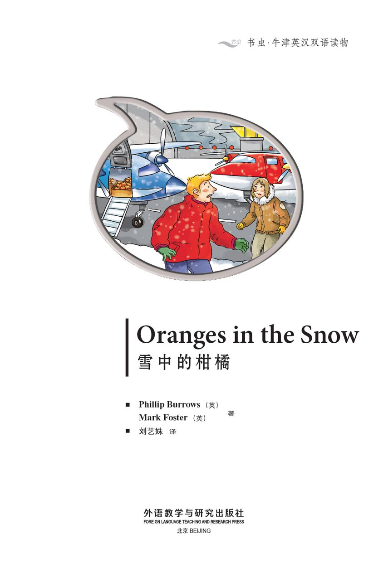
版权页
京权图字：01-2013-7805
Published by arrangement with Oxford University Press for sale in the People's Republic of China only and not for export therefrom. This edition is for sale in the mainland of China only, excluding Hong Kong SAR, Macao SAR and Taiwan.
© Oxford University Press 2008
Oxford is a registered trademark of Oxford University Press
图书在版编目（CIP）数据
雪中的柑橘：英汉对照／（英）伯罗斯（Burrows, P.），（英）福斯特（Foster, M.）著；刘艺姝译．—北京：外语教学与研究出版社，2013.11
（书虫·牛津英汉双语读物）
书名原文：Oranges in the snow
ISBN 978-7-5135-3762-9
Ⅰ．①雪… Ⅱ．①伯…②福…③刘… Ⅲ．①英语—汉语—对照读物②侦探小说—英国—现代 Ⅳ．①H319.4：I
中国版本图书馆CIP数据核字（2013）第272369号
出版人 蔡剑峰
责任编辑 金 辉
封面设计 蔡 颖
出版发行 外语教学与研究出版社
社 址 北京市西三环北路19号（100089）
网 址 http://www.fltrp.com
版 次 2013年12月第1版
书 号 ISBN 978-7-5135-3762-9
制售盗版必究 举报查实奖励
版权保护举报电话：（010）88817519
内容简介
内容简介
你是一位著名的科学家，正在和你的助手乔一起在实验室工作。你在对一朵小花进行实验。这朵花很特别，它可以帮助人们在黑暗中看到东西。
但是有人拿走了这朵特别的花，你也找不到乔了。他就是小偷吗，还是另有其人？你接下来会怎么做呢？你会去乔的房间，还是在实验室里寻找，又或者打电话给你的老板呢？注意——只有一种方法可以重新找回这朵特别的花。但是你要迅速行动——时间不多了。
这是一个互动故事，你可以选择接下来读故事的哪一部分，只要跟随每一部分结尾数字的指示便行。
ORANGES IN THE SNOW
ORANGES IN THE SNOW
You are a famous scientist, and you are working in a laboratory with your assistant Joe. You are doing an experiment on a small flower. It is a very special flower because it can help people to see in the dark.
But then somebody takes the special flower, and you can't find Joe. Is he the thief, or is it another person? What do you do next? Do you go to Joe's room, or do you look in the laboratory, or do you telephone your boss? Be careful – there is only one way to find the special flower again. But move quickly – there is not much time.
This is an interactive story. You can choose what part of the story to read next. Follow the numbers at the end of each section.
目录
Oranges in the Snow
Oranges in the Snow
1 The night is cold and windy. Outside the laboratory a dog howls. You are Mary Durie, the famous scientist. In your hand is a small flower. It grows in Alaska and it is very special. It can help people to see in the dark, you think.
Joe, your assistant, tells you, 'Everything's ready now. We can do the experiment.' He points to the flower.
You are a little afraid but you say, 'OK, let's start.'
■ You begin the experiment. Go to 18.
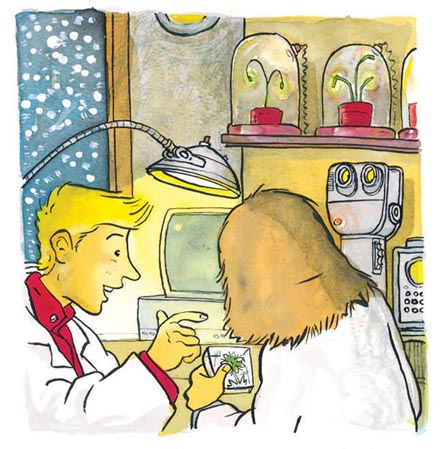
2 You go to the red plane. It is full of fish. A man with a beard gets on the plane. Is he the man you want?
■ You talk to the man on the plane. Go to 29.
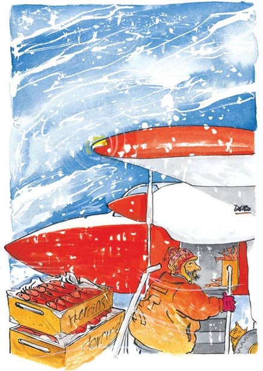
3 You telephone your boss. She is not there – she is playing tennis.
■ Go back to 10.
4 You go to talk to the man. 'What are you doing here? This is private.' He runs away but he drops something. It is a ticket. 'Stop,' you say. But he runs faster.
■ You run after the man. Go to 12.
■ You look at the ticket. Go to 20.
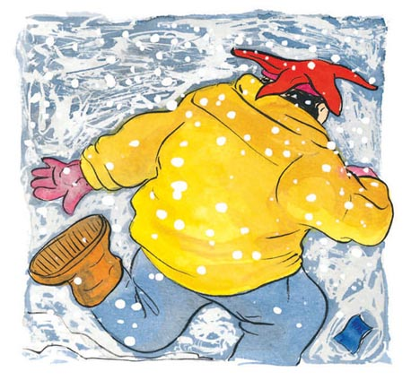
5 You drink the liquid and go out of the laboratory. You can see in the dark! You walk away from the building and see a dog running after a seal. There is a man behind a car. 'What is he doing there?' you think.
■ You telephone your boss and tell her about the flower. Go to 22.
■ You go back to the laboratory and talk to Joe. Go to 10.
■ You talk to the man behind the car. Go to 4.
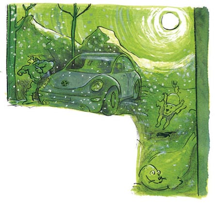
6 You go to Joe's room. He is not there. You hear someone outside. 'Joe! Is that you?' Suddenly, the door closes and you can't get out.
■ Go to 1 and start again.
7 The dog drinks the liquid. After a minute, he smiles and runs away.
■ Go back to 18.
8 You talk to the man with the long hair. 'We're looking for a passenger with a beard,' you say to him.
'Sorry, I can't help you. Are you looking for a watch? I have lots of watches. They are not expensive. ￡3? ￡2?'
'No, thank you. I have a watch.'
'I want a watch,' says Joe.
'We haven't time, Joe!' you say.
■ You talk to the pilot. Go to 30.
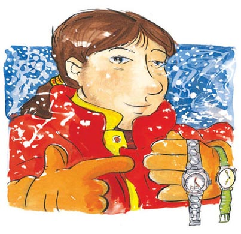
9 You go to the men's table. Just then, they see you. 'Run!' says the man with the hat. 'Let's go.'
The thieves leave the restaurant fast. You and Joe run after them.
The police arrive. 'Where are they?' says a policewoman. 'It's dark and we can't see them.'
But you can see in the dark. 'They are over there,' you tell the police.
■ Go to 24.
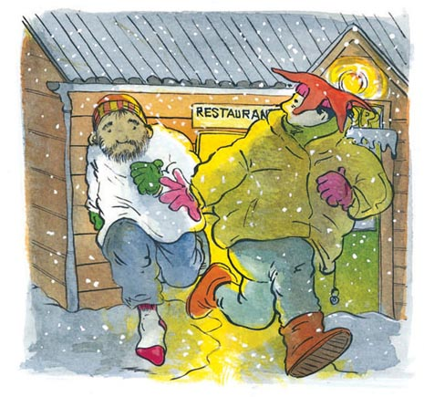
10 You go back into the laboratory. Something is very, very wrong. There is liquid on the table and floor. The table is usually next to the window. Now it is next to the door. And where is Joe? You cannot see him. His white coat is not there – and where is the bottle?
■ You go to Joe's room. Go to 6.
■ You look in this room. Go to 33.
■ You telephone your boss. Go to 3.
11 You go up to him. 'Can we talk to you?' Joe says. 'Of course. Do you want some oranges?' the man asks. You see his face. He hasn't got a beard – but he smells of oranges.
You say, 'No. I'm sorry. You are not the right man.'
■ You ask him some more questions. Go to 15.
■ You go back and follow the tracks on the right. Go to 37.
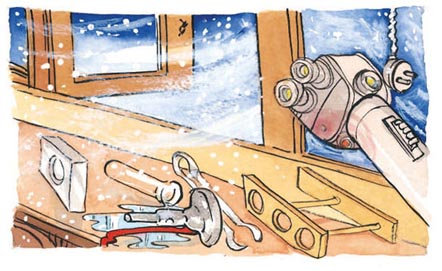
12 You run after the man. It is not easy to run in the snow. He runs faster than you run. In front of him is a Jet-sled. 'Come back here!' you cry. 'Stop him, someone!' But the man gets on the Jet-sled – and drives away.
You walk slowly back to the laboratory. You want to talk to Joe but you cannot see him.
■ You go back to the laboratory. Go to 10.
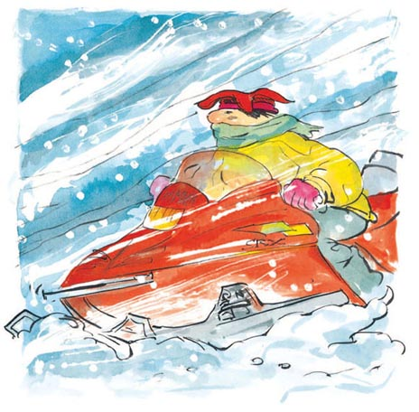
13 You follow the tracks on the left. In front of you is a delivery man. He has a box of oranges.
'Look, Joe – oranges. Is that the man?' you ask.
'I don't know,' says Joe. 'Has he got a beard?'
■ You go up to him. Go to 11.

14 There is nobody in the waiting room, but there are two more doors.
■ You go to the shop door. Go to 35.
■ You go to the restaurant door. Go to 23.
15 You ask him some more questions.
'Where do your oranges come from?' you ask.
He says, 'There is a plane at the airport. It is full of oranges from Spain.'
'Is the plane there now?' asks Joe.
'Yes – but it goes soon,' the man says.
'Are you driving back to the airport?' you ask.
'Yes. Do you want to come?'
■ You get in his lorry. Go to 19.
■ You run to the airport. Go to 27.
■ You follow different tracks. Go to 34.
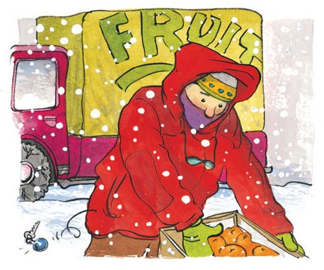
16 Joe takes the small bottle and drinks the liquid. 'Something is happening,' he says. 'I feel different. My legs and my hands hurt, but...' Joe goes to the window and opens the curtains. 'Mary! What's the time?'
'7 o'clock at night,' you tell him.
'It's daytime for me!' he says. Joe opens the door and looks outside.
■ You drink the liquid too. Go to 5.
■ You look outside with Joe. Go to 25.
17 You look under the table and see the dog. He is eating a shoe. 'Get out!' you say. The dog goes outside with the shoe.
■ You look in the cupboard. Go to 31.
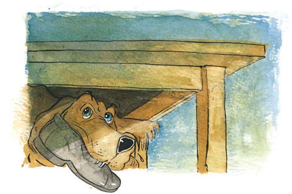
18 You walk to the window. 'What are you doing?' Joe asks.
'We must be careful,' you say, and you hold up the flower. 'This is very valuable.' You look out of the window, then close the curtains. Joe locks the door.
You put the flower in a little bottle. 'OK. We are ready.'
Joe gives you a bigger bottle. It has liquid in it. You pour some liquid on the flower. It turns green. You heat the little bottle. Slowly, the liquid turns yellow. You see some red smoke. You write in your notebook, fast. Then you smile and say, 'That's it!'
■ You give the small bottle to Joe. Go to 16.
■ You drink the yellow liquid. Go to 5.
■ You drop the liquid and the dog drinks it. Go to 7.
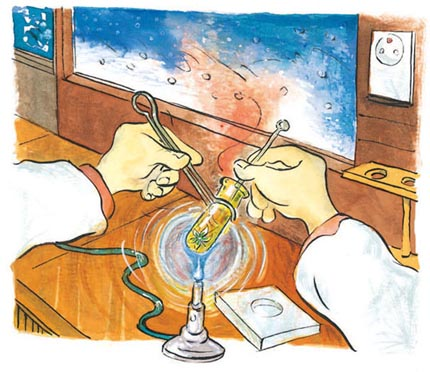
19 You get in his lorry. He talks a lot. He talks about his mother... about football... about his new trousers...
'Please,' you say. 'We must get to the airport fast.'
'Oh dear!' he says. 'I can't find my keys.'
■ You are very slow. The thief gets away.
Go to 1 and start again.
20 You look at the ticket. It is a plane ticket to Alaska. 'Very interesting,' you think.
■ You go back to the laboratory. Go to 10.
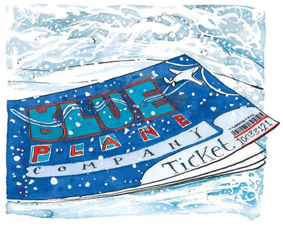
21 You go to the yellow plane. It begins to move. A minute later the plane is in the air. Is the thief on it? Perhaps he is getting away.
■ Go to 26.
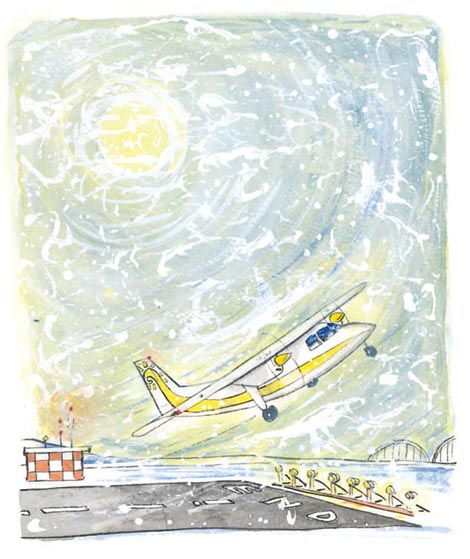
22 You use your mobile phone and call your boss. She says, 'Good. This can help lots of people – but don't tell anyone. Remember, there are bad men out there. Be very careful, Mary.'
■ You go back into the building. Go to 10.
23 You go into the restaurant. There are lots of people there. One is wearing a white coat. Joe says, 'That's my coat!'
■ You walk across the restaurant. Go to 28.
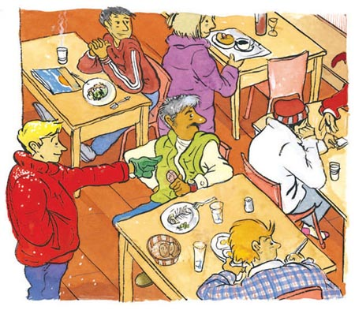
24 The police arrest the men and give the notebook, the flower and the small bottle to Joe. You and Joe can now help lots of people with the liquid.
'Why are these important?' the policewoman asks.
'Wait – and see!' you say. You look at Joe and laugh.
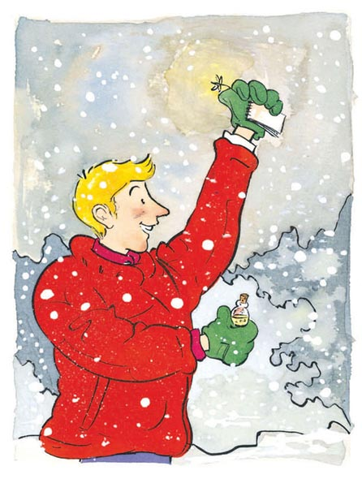
25 You look outside with Joe. He says, 'I can see a dog looking in the dustbins. A seal eating a fish. There's a man driving a car with no lights. This is very exciting!'
■ You drink the liquid. Go to 5.
26 There are only two planes left. Is the thief on the red or the blue one? You want to go to the blue plane. Joe wants to go to the red plane.
■ You go to the blue plane. Go to 36.
■ You go to the red plane. Go to 2.
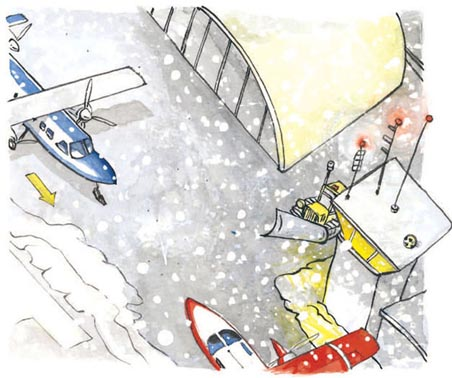
27 You run to the airport and see three planes. They are all different colours – blue, yellow and red. 'Which one?' you ask Joe.
'I don't know. Can you see a man with a beard?'
'No. We haven't got much time. Let's go.'
■ You go to the yellow plane. Go to 21.
■ You go to the blue plane. Go to 36.
■ You go to the red plane. Go to 2.
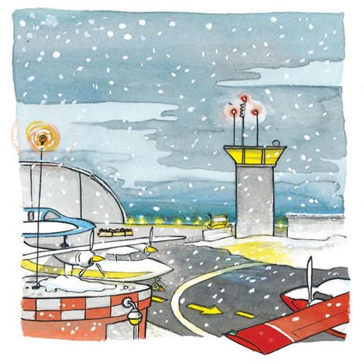
28 You and Joe walk across the restaurant. The man in the white coat has a beard. You can see it now. He is wearing only one shoe. The man with the beard talks to a man with a hat. 'I have it,' he says and puts a notebook on the table. You look and see it is your notebook!
The man with the hat says, 'Good! Now we can make lots of money.'
■ You go to the men's table. Go to 9.
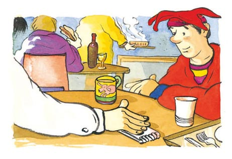
29 You talk to the man. He does not want to talk to you. He says, 'Go away. I must work.'
■ He is the thief, you think. You get the police. Go to 32.
■ You leave him and go to the blue plane. Go to 36.
30 You talk to the pilot. 'I am looking for someone,' you say. 'A man with a beard who smells of oranges.'
The pilot says, 'Everyone on my plane smells of oranges. There is a man with a beard. He is in that building.' The pilot points to a building with three doors. 'Why do you want him?'
'He is a thief, I think. Can you phone the police?' you ask. Then you and Joe run to the building.
■ You go in the restaurant door. Go to 23.
■ You go in the waiting room door. Go to 14.
■ You go in the shop door. Go to 35.
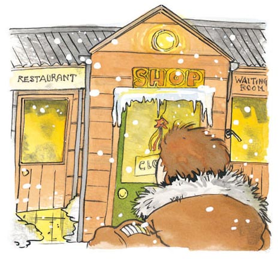
31 You look in the cupboard and you find Joe. There is a scarf over his mouth and sticky tape on his hands. 'Are you OK?' you ask, and take the scarf away.
'Yes, I'm OK,' he says.
'What can you remember?' you ask.
'A man... with a beard. A smell of... oranges. A fight. His shoe in my hand...'
'Where is the thief?' you ask.
Joe looks at the sticky tape and says, 'The airport, perhaps?'
You go outside. 'Look!'
There are three tracks in the snow.
■ You follow the tracks on the left. Go to 13.
■ You follow the tracks on the right. Go to 37.
■ You follow the tracks straight on. Go to 34.
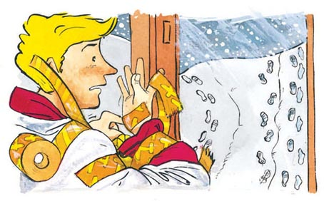
32 You get the police. They ask the man lots of questions. After a long time they tell you, 'He works on the plane and he is not the man you want.' It is now very late – the thief is far away.
■ You must begin again. Go back to 1.
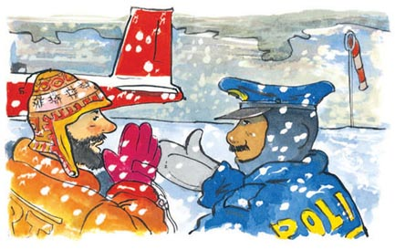
33 You look in the room. You can't see your notebook. Or the flower. Or the small bottle with the liquid in. This is very bad. And where is Joe? Can he be a thief?
Just then you hear a noise. At first you think it is the wind.
You hear it again. It is not the wind. Where is the noise coming from?
■ You look under the table. Go to 17.
■ You look in the cupboard. Go to 31.
34 You follow the tracks straight on. These tracks are yours. They take you back to the building, so you follow the tracks on the right.
■ Go to 37.
35 You go to the shop door but the shop is closed.
■ You go to the restaurant. Go to 23.
■ You go to the waiting room. Go to 14.
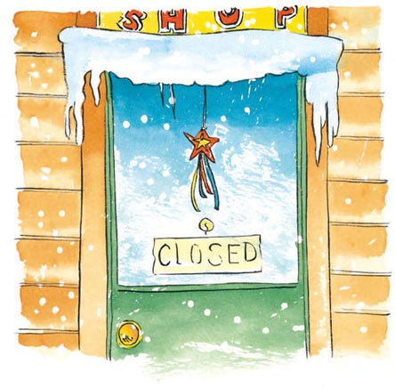
36 You go to the blue plane. There are lots of boxes of oranges. A man with long hair is putting the boxes in a lorry. Next to him is the pilot. Some passengers are next to the plane, but nobody has a beard.
'Do we talk to the man with the long hair or the pilot?' you ask Joe.
■ You talk to the pilot. Go to 30.
■ You talk to the man with long hair. Go to 8.
37 These tracks go to the airport.
■ Go to 27.
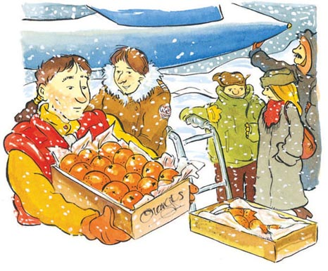
GLOSSARY 词汇表
GLOSSARY
词汇表
cupboard n. a box or space in a building; you put things in it 橱柜，衣柜
curtain n. cloth that covers a window 窗帘
delivery man if you buy something, he brings it to your home or work 送货员
drop v. let fall to the ground 掉落，使落下
experiment n. you try an experiment to see if something works 实验
famous adj. you are famous if many people know you 著名的，出名的
heat v. when you heat something it gets hot 加热，使变热
howl v. to make a long, loud cry （狗、狼等）嗥叫，长嚎
key n. you open and lock doors with this 钥匙
liquid n. something that isn't hard, like water 液体，液态物
lock v. close with a key 锁上
orange n. fruit you eat; it grows on trees 柑橘
private n. a place where some people are not allowed 私人地方
scientist n. someone who finds out things about the world 科学家
smile v. you smile when you are happy 微笑
special adj. very good or unusual 特殊的，特别的
thief n. someone who takes something that is not theirs 小偷，贼
valuable adj. worth a lot of money 值钱的，贵重的
windy adj. a type of weather; it makes trees and washing move 多风的，风大的
ACTIVITIES 阅读练习
Oranges in the Snow
ACTIVITIES
阅读练习
ACTIVITIES
Before Reading
1 Look at the front cover of the book. Are the following sentences true (T) or false (F)?
1) The story happens in a cold place.
T □／F □
2) Someone is flying a plane.
T □／F □
3) The story is about apples on a beach.
T □／F □
2 Look at the back cover. Complete the following sentences.
1) Mary Durie is a famous......
2) Her laboratory is in......
3) She has an assistant called......
4) Some people steal her......
3 Look at the front and back cover. Guess the correct answer for each question.
1) The story is...
a □ exciting.
b □ funny.
c □ a love story.
2) The oranges are...
a □ on the plane.
b □ in the laboratory.
c □ valuable.
ACTIVITIES
While Reading
1 Read the first parts of the story (1 & 18). Are these sentences true (T) or false (F)?
1) Mary Durie holds a small flower.
T □／F □
2) Red smoke comes from the little bottle.
T □／F □
3) Joe drops some liquid on the dog.
T □／F □
4) Someone comes in the door.
T □／F □
5) A man eats the flower.
T □／F □
6) Mary Durie writes in her notebook.
T □／F □
2 Read section 31. Who does what? Choose an answer.
1) Who is looking for Joe?
a □ Mary.
b □ The man with the hat.
c □ The delivery man.
2) Who is in the cupboard?
a □ The pilot.
b □ Joe.
c □ The policeman.
3) Who is wearing only one shoe?
a □ The thief.
b □ The dog.
c □ The delivery man.
4) Who says 'Where is the thief?'
a □ Mary.
b □ The man with long hair.
c □ The policeman.
3 Read sections 5, 12, 18, 30, and 36. Some words are in the wrong sentences. Can you put them in the right places?
1) The pilot points to the building at the hat.
2) There are boxes of oranges near the blue airport.
3) Mary sees a dog running after a plane.
4) The man on the Jet-sled wears a funny liquid.
5) The seal with the long hair is putting boxes in the lorry.
6) The man in the little bottle turns yellow.
4 Read sections 23, 28, 9, and 24. In this description, there are six mistakes. Which are they?
Two men come in and sit at a table. One wears a red coat. The other one wears a funny hat. The man in the coat gives the other man a watch. Joe and Mary come into the restaurant. Mary points to the man in the coat. The two men run away. One of them wears only one glove. Mary and Joe catch them.
ACTIVITIES
After Reading
1 Put these words in the right places.
experiment airport sticky tape coat oranges flower restaurant run
Mary Durie and Joe are doing an _________ using a special _________ They make a liquid that can help people see in the dark. A man who smells of _________ attacks Joe. The man takes the special liquid and Joe's _________ Mary finds Joe with _________ round his hands. Joe and Mary follow the thief to the _________ They go into a _________ and see two men with the liquid. '_________!' shouts one of the men and they both leave the restaurant fast. The police arrest the men and Mary and Joe get their special liquid back.
2 In the story, what do people use these things for?
1) The sticky tape.
2) The special liquid.
3) The notebook.
3 Answer these questions.
1) Someone steals four things from the laboratory. What are they?
2) Where does the small flower grow?
3) Why can't the police see the thieves in the dark?
4) Why does the man with a beard smell of oranges?
5) Who phones the police?
6) Where do the tracks in the snow go?
4 Put these sentences in the correct order.
1) □ The police arrest the two men.
2) □ Mary drinks the liquid.
3) □ Someone steals the bottle.
4) □ The thieves are in the restaurant.
5) □ Mary talks to the pilot.
6) □ Joe is in the cupboard.
TRANSLATION 参考译文
TRANSLATION 参考译文
Oranges in the Snow
雪中的柑橘
1 这是个寒冷、刮着风的夜晚，实验室外有只狗在嚎叫。你是著名的科学家玛丽·迪里。你手中拿着一朵小花。它长在阿拉斯加州，十分特别。你认为它可以帮助人们在黑暗中看到东西。
你的助手乔告诉你：“一切都准备好了，我们可以做实验了。”他指了指花。
你有一点害怕，但你说：“好，我们开始吧。”
■ 你开始做实验。跳到18。
2 你走向红色的飞机。飞机里装满了鱼。一个有胡子的男人上了飞机。他是你要找的人吗？
■ 你和飞机上的男人交谈。跳到29。
3 你给你的老板打电话，她不在——她在打网球。
■ 回到10。
4 你走过去和那个男人交谈。“你在这里做什么？这里是私人地方。”他逃跑了，但掉了一件东西。那是一张票。“站住。”你说。但是他跑得更快了。
■ 你去追那个人。跳到12。
■ 你查看那张票。跳到20。
5 你喝下液体，走出实验室。你可以在黑暗中看见东西了！你离开了房子，看到一只狗正在追一只海豹。一辆车后面有个人。“他在那里干什么呢？”你想。
■ 你给你的老板打电话，告诉她关于这朵花的事情。跳到22。
■ 你回到实验室，和乔交谈。跳到10。
■ 你和车后面的男人交谈。跳到4。
6 你去乔的房间。他不在。你听到外面有人。“乔！是你吗？”突然，房门关上了，你出不去了。
■ 回到1，重新开始。
7 狗喝下液体。一分钟后，它笑着跑开了。
■ 回到18。
8 你们和长发男人交谈。“我们在找一个有胡子的乘客。”你对他说。
“对不起，我帮不了你们。你们想要手表吗？我有许多手表，都不贵。三英镑？两英镑？”
“不用了，谢谢。我有手表。”
“我想要一块手表。”乔说。
“我们没时间了，乔！”你说。
■ 你和飞行员交谈。跳到30。
9 你们朝他们的桌子走去。就在这时，他们看到了你们。“快跑！”戴帽子的男人说。“我们走！”
小偷们迅速离开了餐馆。你和乔紧追其后。
警察到了。“他们在哪儿？”一位女警察问。“天太黑了，我们看不到他们。”
但是你可以在黑暗中看清东西。“他们在那边。”你告诉警察。
■ 跳到24。
10 你回到实验室，情况非常不对劲儿。桌子和地板上洒着液体。桌子通常是靠窗而放，现在它被挪到了门边。乔在哪里呢？你没看到他。他的白色外套也不在——而且，瓶子在哪里？
■ 你去乔的房间。跳到6。
■ 你在这个房间搜索。跳到33。
■ 你给你的老板打电话。跳到3。
11 你们朝那个人走去。“我们可以和你谈谈吗？”乔说。“当然可以。你们想要柑橘吗？”那个男人问。你看到了他的脸。他没有胡子，但是身上有柑橘味。
你说：“不需要。不好意思，你不是我们要找的人。”
■ 你们又问了他一些问题。跳到15。
■ 你们回去重新沿着右边的脚印追寻。跳到37。
12 你追赶那个人。在雪地中奔跑并不是件轻松的事。他跑得比你快。他前面有一架喷水滑橇。“回来！”你喊道。“谁来拦住他！”但是这个人上了滑橇开走了。
你慢慢走回实验室。你想要和乔谈谈，但是没有看到他。
■ 你回到实验室。跳到10。
13 你们沿着左边的脚印追寻。你们面前出现一个送货员，他抱着一箱柑橘。
“看，乔——柑橘。会是那个人吗？”你问。
“我不知道。”乔说。“他有胡子吗？”
■ 你们走上前去。跳到11。
14 等候室里没有人，不过还有两扇门。
■ 你走向商店的门。跳到35。
■ 你走向餐馆的门。跳到23。
15 你们又问了他几个问题。
“你的柑橘从哪里来的？”你问。
他说：“机场有一架飞机，装满了从西班牙来的柑橘。”
“飞机现在还在那里吗？”乔问。
“在，不过它很快就要离开了。”那个男人回答。
“你要开车回机场吗？”你问。
“是的。你们要一起来吗？”
■ 你们上了他的卡车。跳到19。
■ 你们跑到机场。跳到27。
■ 你们追踪另一行脚印。跳到34。
16 乔拿过小瓶，喝了里面的液体。“有什么在变，”他说，“我觉得不一样了。我的腿和手很疼，但是……”他走向窗户，拉开了窗帘。“玛丽！几点了？”
“晚上七点。”你告诉他。
“对我来说就像白天！”他说。乔打开了门，向外望去。
■ 你也喝下了液体。跳到5。
■ 你和乔一起向外望。跳到25。
17 你往桌下看，看到了一只狗，它正在啃一只鞋。“出去！”你说。狗叼着鞋子出去了。
■ 你查看橱柜。跳到31。
18 你走到窗前。“你在做什么？”乔问。
“我们可得小心点儿。”你一边举起花一边说道，“它十分珍贵。”你向窗外看看，然后拉上了窗帘。乔锁上了门。
你把花放进一个小瓶。“好了，我们可以开始了。”
乔递给你一个大一点儿的瓶子，里面装有液体。你往花上倒了一点儿液体。它变成了绿色。你给小瓶加热，慢慢地，液体变成了黄色。你看到一些红色的烟。你快速地在笔记本上做记录。然后笑了，说：“就是它了！”
■ 你把小瓶递给乔。跳到16。
■ 你喝下黄色液体。跳到5。
■ 你打翻了液体，狗喝了它。跳到7。
19 你们上了他的卡车。他很能说，说他的妈妈……说足球……说他的新裤子……
“拜托，”你说，“我们必须尽快赶到机场。”
“天哪！”他说，“我找不到钥匙了。”
■ 你们行动太缓慢，小偷跑了。
返回1，重新开始。
20 你看着票。这是一张去阿拉斯加州的机票。“有意思。”你想。
■ 你回到实验室。跳到10。
21 你走向黄色的飞机，它开始移动。一分钟后，飞机飞上了天。小偷在上面吗？可能他成功逃脱了。
■ 跳到26。
22 你用手机给老板打电话。她说：“很好。这可以帮助很多人——但不要告诉任何人。记住，外头有坏人，要万分小心，玛丽。”
■ 你走回房子。跳到10。
23 你们走进餐馆。餐馆里有很多人，其中一个穿着一件白色外套。乔说：“那是我的外套！”
■ 你们向餐馆里头走去。跳到28。
24 警察逮捕了这两个人，把笔记本、花和小瓶交给乔。现在你和乔可以用这种液体帮助很多人了。
“它们为什么会这么重要呢？”女警察问。
“等着——看吧！”你说。你看着乔，大笑起来。
25 你和乔一起向外望。他说：“我看到一只狗在翻垃圾箱，一只海豹在吃鱼，还有一个男人在开车，但没开车灯。这太让人激动了！”
■ 你喝下液体。跳到5。
26 只剩下两架飞机了。小偷是在红色飞机上还是蓝色飞机上？你想要去蓝色飞机，乔想要去红色飞机。
■ 你们走向蓝色飞机。跳到36。
■ 你们走向红色飞机。跳到2。
27 你们跑到机场，看到三架飞机。每架飞机的颜色都不同，有蓝色、黄色和红色。“是哪一架？”你问乔。
“不知道。你看到留胡子的男人了吗？”
“没有。我们时间不多，走吧！”
■ 你们走向黄色飞机。跳到21。
■ 你们走向蓝色飞机。跳到36。
■ 你们走向红色飞机。跳到2。
28 你和乔向餐馆里头走去。你现在可以看到，穿白色外套的男人长着胡子，他只穿着一只鞋。长胡子的男人在和一个戴帽子的男人交谈。“我拿到了。”他说着，把一个笔记本放到桌上。你看到那是你的笔记本！
戴帽子的男人说：“太好了！现在我们可以赚很多钱了！”
■ 你走向他们的桌子。跳到9。
29 你和那个男人说话，他却不想和你说话。他说：“走开，我必须工作。”
■ 你认为他就是那个小偷。你叫来警察。跳到32。
■ 你撇下他，走向蓝色飞机。跳到36。
30 你和飞行员交谈。“我正在找人，”你说，“这个人长着胡子，身上有柑橘味。”
飞行员说：“我飞机上人人身上都有柑橘味。不过长着胡子的男人倒有一个。他在那栋房子里。”飞行员指着一栋有三个门的房子。“你们为什么找他？”
“我觉得他是小偷。你可以报警吗？”你问。然后你和乔跑向那栋房子。
■ 你们走进餐馆的门。跳到23。
■ 你们走进等候室的门。跳到14。
■ 你们走进商店的门。跳到35。
31 你查看橱柜里面，发现了乔。他的嘴上给围巾勒着，手上缠着胶带。“你还好吗？”你问，并取下围巾。
“我没事。”乔说。
“你记得发生了什么事吗？”你问。
“一个男人……长着胡子，还有……柑橘味。我们打了起来。我抓住了他的鞋子……”
“小偷在哪里？”你问。
乔看着胶带，说：“大概在机场？”
你走出门。“看！”
雪地上有三行脚印。
■ 你沿着左边的脚印追寻。跳到13。
■ 你沿着右边的脚印追寻。跳到37。
■ 你沿着直行的脚印追寻。跳到34。
32 你叫来警察。他们问了这个男人许多问题。过了很长时间之后，他们告诉你：“他在飞机上工作，并不是你们要找的人。”现在为时已晚——小偷已经逃得远远的了。
■ 你必须重新开始。回到1。
33 你在房间里找。你没有看到你的笔记本，也没看到那朵花，连装着液体的小瓶子也不见了。这太糟了。乔去哪儿了？他会是小偷吗？
就在这时，你听到有声音。一开始你以为是风声。
你又听到了声音。这声音不是风声，它是哪里发出来的？
■ 你查看桌子底下。跳到17。
■ 你查看橱柜里。跳到31。
34 你沿着直行的脚印追寻。这行脚印是你自己的，它们带你回到了屋子，所以你又沿着右边的脚印追寻。
■ 跳到37。
35 你走向商店，但是商店关门了。
■ 你走向餐馆。跳到23。
■ 你走向等候室。跳到14。
36 你们走向蓝色飞机，上面有许多箱柑橘。一个长发男人正在把柑橘搬进一辆卡车，他旁边是飞行员。一些乘客站在飞机旁，但是没有人有胡子。
“我们是跟长发男人谈谈，还是要跟飞行员谈谈？”你问乔。
■ 你们和飞行员交谈。跳到30。
■ 你们和长发男人交谈。跳到8。
37 这行脚印通向机场。
■ 跳到27。
封底
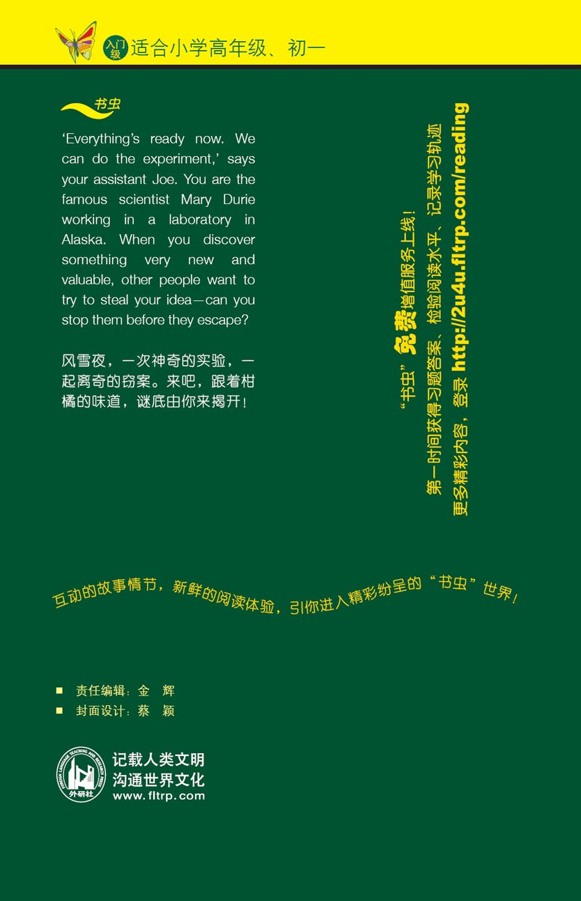